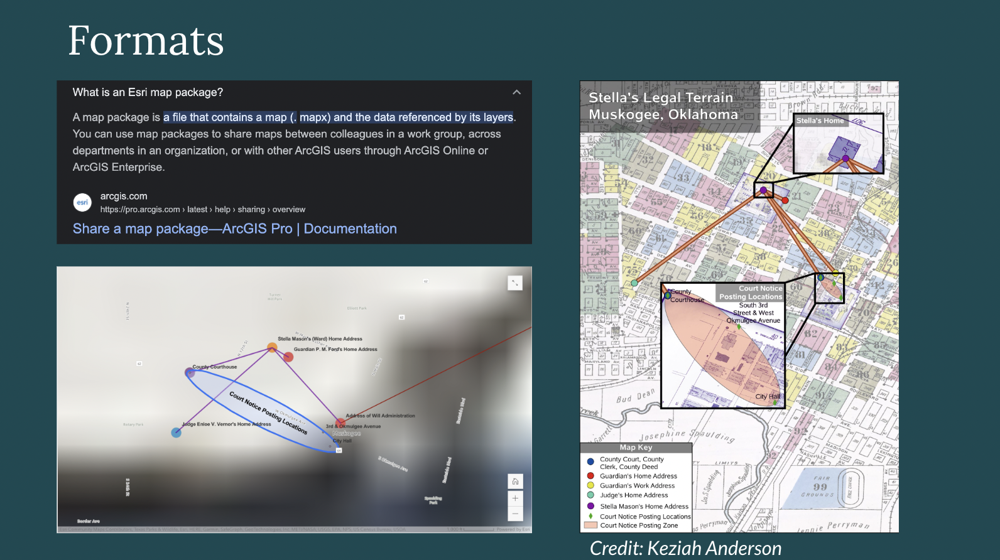
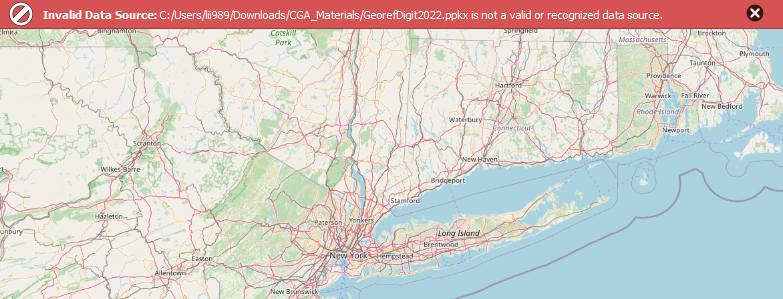
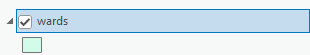
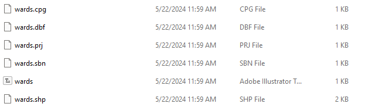

Open Access Practices for GIS
Pre-work to complete before class
Homework #1: Set up your OSF.io account
- Instantiate your Harvard OSF (Open Science Framework) account.
- Select
Create New Project.
- Name your new project
Data Management Workshop.
Homework #2: Framing ideas
Read this article about balancing data safety and open science in an academic research context.
In-class workshop
1. Saving in reusable formats
Discussion

While ESRI map package formats are the default, they are not backwards-compatible.
ESRI map packages are not recognized by open source GIS software.
ESRI map package file in a downloads folder
⚠️ If we want any of our data layers to be accessible, we need to export them to more persistent file formats.
Activity
We will start using an updated version of the original map package, which includes datasets at the stage of the completed tutorial, so instead of an ungeoreferenced map, we have a georeferenced map of 1891 NYC, and a new polygon file that starts to trace out historical boundaries.
Step 1: Open the source data
- Download
ESRI_FILES.zipfrom the OSF.io example repository , and uncompress or extract the folder, so that you can double-clickGEOREF_DIGITIZE.ppkgand open it in ArcGIS Pro.
Discussion
Defaults in ArcGIS Pro are problematic for data management.
Creating feature class inside a file geodatabase.
Newly defined feature class in the ArcGIS Pro layer pane.
What the?
Texts from Belle reminding you which formats to use 😸
Step 2: Export to Shapefile
-
Navigate to
Analysis→Tools -
Search for
Export Features -
Under
Input FeaturesselectWards -
Click the folder icon next to
Output Feature Classand choose a regular folder (not an ESRI file geodatabase) on your computer where you’d like to save the shapefile. -
Select
Run

Step 3: Export to GeoJSON
- Navigate to Analysis → Tools
- Search for Features to JSON (Conversion)
- Under Input Features select Wards: 1
- Click the folder icon next to Output Feature Class and choose a regular folder (not an ESRI file geodatabase) on your computer where you'd like to save the .geoJSON
- Check (select) Output to GeoJSON
- Select Run
Discussion
OSF.io has a cap on storage.
Storage integration options.
Step 4: Export to GeoTIFF
-
Navigate to
Analysis→Tools -
Search for
Copy Raster -
Under
Input Rasterselectmanhattan.sid -
Choose an output location in a folder on your computer to save the output, and name the file.
-
Under
FormatselectTIFF format.
2. Upload data to OSF.io
-
Zip up
shapefileandgeoTIFFfiles, separately -
Open OSF.io account and navigate to your
Data Management Workshopproject folder -
Organize project folders and discuss
-
Upload the three datasets: zipped geoTIFF, zipped shapefile, and geoJSON
-
Discuss file formats and relationships and segue into mockumentation exercise
3. Mockumentation
Look at example README files, and collaboratively create documentation for this project.